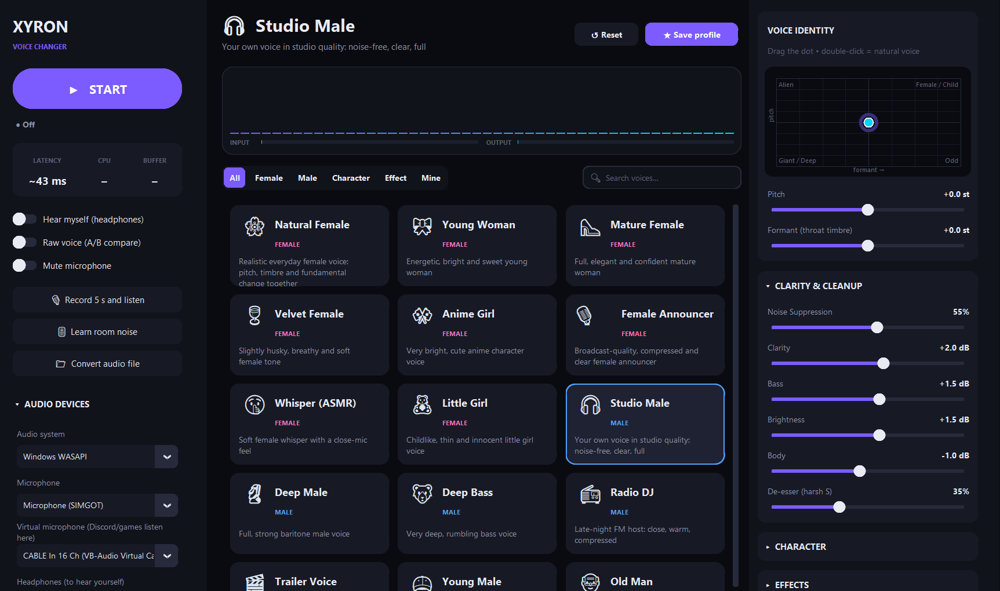
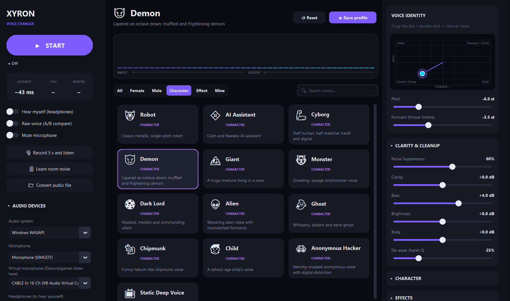

Xyron Voice Changer is a studio-grade, formant-aware voice changer for Windows. Pick one of 37 hand-tuned voices, or sculpt your own with 31 live controls, and send the result straight to Discord, OBS, games and video calls.
v1.2.0latency ~21–85 ms100% offlinePython 3.12113 tests passinglicense MIT
Single portable .exe · no installer · no account · no telemetry. Requires the free VB-CABLE driver to feed other apps.

37built-in voices in 4 categories
31real-time parameters
4engine quality modes
2languages: English & Turkish
Listen
One sentence, twelve voices
Every clip below was produced by Xyron Voice Changer's own engine from the same recording, using the built-in presets with no manual tweaking. Press play and compare.
Script: “Hey there! This is a quick demo of Xyron Voice Changer. Same sentence, same microphone, a completely different voice.”
Source: a synthetic male speech sample · Studio Quality mode · MP3 160 kbps
Features
Built like a studio plug-in
Most voice changers just speed up or slow down your voice. Xyron Voice Changer separates pitch (how high you speak) from formant (the size of your throat) so a deep voice sounds deep and a female voice sounds like a person, not a chipmunk.
Formant-aware pitch shifting
Phase-locked Laroche–Dolson peak shifting plus a cepstral spectral envelope keep pitch and timbre independent, with far less of the “phasey” robotic artefact.
37 hand-tuned presets
Female, Male, Character and Effect voices: from Natural Female and Radio DJ to Demon, Ghost, Walkie-Talkie and Underwater. Save your own in the Mine tab.
Studio cleanup
Spectral noise suppression with a Learn room noise button, noise gate, de-esser, 4-band EQ, compressor and a look-ahead peak limiter that never clips.
XY voice pad
Drag a single dot to move pitch and formant together: up for higher, down for deeper, right for a more feminine timbre. Double-click to snap back to your natural voice.
Character & FX rack
Robot vocoder, whisper, breath, vibrato, octave harmonizer, distortion, bitcrusher, chorus, phaser, echo and reverb, all adjustable live while you talk.
Global hotkeys
Ctrl+Alt+B raw voice, M mute, V on/off. They work even while a full-screen game or Discord has focus.
Hear what others hear
Record 5 s and listen plays back exactly what your friends receive, and Hear myself monitors live through your headphones. Click-free A/B with Raw voice.
Offline file conversion
Run any WAV, MP3, FLAC, OGG, M4A or AIFF file through the same engine and save a 24-bit WAV, from the app or from the command line.
Private by design
No network code at all: no account, no cloud, no telemetry. Your voice never leaves your PC. Settings live in a plain JSON file you can read.
English & Turkish
The whole interface, every preset and the CLI are translated. The language follows your Windows display language on first launch and can be switched any time.
Self-healing audio
Adaptive micro-resampling absorbs clock drift between sound cards, a watchdog restarts dropped streams, and live latency, CPU and buffer health are always on screen.
Open & tested
Clean, typed Python with 113 automated tests covering the DSP engine, effects, audio routing, translations, presets and CLI.
Main window: device routing, live telemetry, preset browser and the voice-identity pad.

Character voices: selecting Demon moves the XY pad to −6 st pitch / −3.5 st formant.
Under the hood
How your voice travels
Audio is processed in mono at 48 kHz. A dedicated audio thread does the heavy lifting while the interface only updates parameters, so dragging a slider never interrupts your voice.
Input
Microphone
WASAPI · MME · DirectSound
Thread-safe ring buffer
→
Spectral engine (STFT)
Voice identity
1 · Noise suppression
2 · Pitch shift (phase-locked)
3 · Formant via cepstral envelope
4 · Robot · whisper · breath · harmonizer
5 · De-esser
→
Pedalboard chain
Tone & character
Gate → Low/High cut
Bass · Body · Clarity · Brightness
Distortion · Bitcrush
Chorus · Phaser
Compressor → Echo → Reverb
→
Safety
Limiter
Look-ahead peak limiter
tanh soft ceiling (−0.2 dBFS)
Click-free bypass & mute ramps
→
Output
VB-CABLE + headphones
Discord, OBS, games, calls
Optional self-monitoring
Adaptive ±0.5% resampling
Effects are only instantiated when they are switched on, and the chain is rebuilt only when its structure changes, so reverb and echo tails keep ringing while you move sliders.
Get started
Up and running in 5 minutes
You need Windows 10 or 11 (64-bit), a microphone and, to send your new voice to other apps, the free VB-CABLE virtual audio driver.
Install the virtual microphone (one time only)
Download VB-CABLE from the official VB-Audio website (or the unmodified copy attached to our release), extract it, then right-click VBCABLE_Setup_x64.exe → Run as administrator → Install Driver, and restart your PC.
Tip: extract it into a folder named VBCable next to the app and the in-app “VB-Cable not found: Install” button will launch the installer for you.
Download and launch Xyron Voice Changer
Grab Xyron-Voice-Changer-win64.exe from the latest release and double-click it. No installation needed. The first launch takes 5–10 seconds while it unpacks.
“Windows protected your PC”: click More info → Run anyway. The app is not code-signed yet, so SmartScreen shows this for every new build.
Antivirus says “Access denied”: add the EXE or its folder to your antivirus exclusions, or use the portable folder build, which starts faster and triggers fewer false positives.
Pick your devices
In the left sidebar under Audio devices:
Audio system: Windows WASAPI (recommended; try MME if you hear crackles)
Click START, then Learn room noise and stay silent for 2–3 seconds. Click any voice card. Use Record 5 s and listen to hear exactly what others will hear.
Point your apps at the cable
In Discord, OBS, your game or meeting app, set the input device / microphone to CABLE Output (VB-Audio Virtual Cable). See the app-specific guides below.
App-specific setup
Open User Settings → Voice & Video.
Set Input Device to CABLE Output (VB-Audio Virtual Cable).
Turn offNoise Suppression (Krisp) and Echo Cancellation: Xyron Voice Changer already cleans your voice, and Krisp can mangle shifted voices.
Set Input Sensitivity to automatic or use Push-to-Talk as usual.
Use Let's Check in Discord, or Xyron's Record 5 s and listen, to verify.
Mute or remove your original Mic/Aux source so viewers don't hear both voices.
Optional: use the global hotkey Ctrl+Alt+B on stream to toggle between your real and changed voice.
Open the game's Audio / Voice chat settings.
Set the Microphone / Input device to CABLE Output (VB-Audio Virtual Cable).
If the game has no device selector it uses the Windows default: in Sound settings → Input, set CABLE Output as the default device.
Global hotkeys keep working while the game is full-screen.
Open Settings → Audio in Zoom, Teams or Google Meet.
Choose CABLE Output (VB-Audio Virtual Cable) as the Microphone.
Disable the app's own heavy noise suppression for the cleanest result.
For professional calls, try the Studio Male preset: your own voice, just cleaner.
Voice library
37 built-in voices
Values are tuned for a typical adult male speaking voice (~100–140 Hz). Using a higher voice? Start from Female to Male or nudge the XY pad. Every preset is a starting point: adjust, then Save profile.
Voice
Category
Pitch
Formant
Description
CLI key
Reference
Every control, explained
All 31 parameters update in real time. st = semitones (12 st = one octave). Percent values run from 0 (off) to 100%.
Section
Control
Range
Default
What it does
Engine quality modes
Choose in Audio devices → Engine quality. Engine latency is the STFT window; your sound card adds a few more milliseconds.
Mode
FFT / hop
Engine latency
Best for
Maximum Clarity max
4096 / 512
≈ 85 ms
Deep voices that sound grainy when shifted
Studio Quality (default) studio
2048 / 256
≈ 43 ms
Everyday use, streaming, voice chat
Balanced balanced
2048 / 512
≈ 43 ms
Older CPUs (half the processing)
Low Latency low_latency
1024 / 256
≈ 21 ms
Competitive games, singing along
Global hotkeys
Registered system-wide through the Windows API, so they work while any other app has focus. If another program already owns a combination, the app tells you on start-up.
Shortcut
Action
Ctrl+Alt+B
Raw voice: instantly bypass the changer (click-free A/B)
Ctrl+Alt+M
Mute the microphone
Ctrl+Alt+V
Start / stop the voice changer
💡Hotkeys can be turned off with "hotkey_enabled": false in settings.json.
Command line
Scriptable, too
Run main.py without arguments to open the app. With arguments, it becomes a command-line tool for batch conversion and diagnostics. Output follows --lang, your saved language, or your system language.
List all presets
python main.py --list-presets --lang en
Output (excerpt)
f_natural Female Natural Female pitch=+10.0 formant=+3.2
m_deep Male Deep Male pitch=-3.0 formant=-1.5
c_robot Character Robot pitch=+0.0 formant=+0.0
e_radio Effect Walkie-Talkie pitch=+0.0 formant=+0.0
Show audio devices
python main.py --list-devices
Output (example)
== Windows WASAPI
IN [12] Microphone (USB Audio) <- suggested microphone
OUT [ 9] CABLE Input (VB-Audio Virtual Cable) <- virtual cable
OUT [ 7] Headphones (Realtek Audio) <- headphones
main.py entry point: GUI + CLI
xyrox_voice/
dsp.py STFT engine: denoise, pitch, formant, layers
effects.py Pedalboard chain + look-ahead limiter
processor.py engine + effects + meters, quality modes
audio_io.py devices, ring buffers, real-time router
ui.py customtkinter interface
presets.py 37 presets + user preset store
params.py all parameters, ranges, formatting
i18n.py English / Turkish translations
hotkeys.py global Windows hotkeys (ctypes)
render.py offline file rendering
config.py settings.json
tests/ pytest suite
🌍Add a language: add its code to LANGUAGES in xyrox_voice/i18n.py and a dictionary to TRANSLATIONS. Missing strings fall back gracefully, and tests/test_i18n.py tells you exactly which ones are untranslated.
Help
FAQ & troubleshooting
My friends can't hear my changed voice.
Check the chain end to end: in Xyron, Virtual microphone must be CABLE Input and the app must be started (green “Active”). In Discord or your game, the input device must be CABLE Output. If VB-CABLE doesn't appear anywhere, reinstall it as administrator and reboot.
I hear crackling or dropouts.
Switch Audio system to MME or Windows DirectSound.
Select Engine quality → Balanced to halve the CPU load.
Close other apps that use the microphone in “exclusive mode”.
Watch the BUFFER indicator: Good / Fair / Poor tells you how healthy the stream is.
There is too much delay.
Choose Engine quality → Low Latency (≈21 ms engine latency) and use WASAPI. Note that Hear myself always sounds slightly delayed and “doubled” because you also hear your real voice through your skull; Record 5 s and listen gives a more honest impression.
The changed voice sounds grainy or metallic.
Very large pitch shifts on deep voices are the hardest case. Select Engine quality → Maximum Clarity (about 40 ms more latency, much cleaner). Also press Learn room noise while silent, and avoid stacking Discord's Krisp on top.
Windows SmartScreen or my antivirus blocks the EXE.
The executable is built with PyInstaller and is not code-signed yet, which some antivirus engines flag by reputation alone. Choose More info → Run anyway, add an exclusion, use the portable folder build, or run from source. Every release lists SHA-256 checksums so you can verify the download.
Where are my settings and saved profiles?
In %APPDATA%\Xyron_Voice_Changer\: settings.json (devices, language, last preset) and presets.json (your Mine profiles). Delete the folder to reset everything. Settings from the earlier XYROX Voice Studio builds are migrated automatically.
How do I change the language?
Use the Dil / Language selector at the bottom of the left sidebar. On first launch the app picks Turkish on a Turkish Windows and English everywhere else.
Does it work on macOS or Linux?
The DSP engine, effects and CLI are cross-platform Python, but the app targets Windows: global hotkeys use the Win32 API and the virtual cable workflow is built around VB-CABLE. Ports are welcome; see the developer section.
Is it really free? Is my voice recorded?
Yes, it's free and MIT-licensed. Nothing is recorded or uploaded: the source contains no networking code. The 5-second test recording stays in memory and is discarded after playback.
The team
Developers
Xyron Voice Changer is built by a small human + AI team.
Xyron
Creator · Lead developer
Project owner. Product vision, voice design and preset tuning, testing on real hardware, and releases.
Bug reports, new presets, translations and pull requests are welcome. Please run python -m pytest before opening a PR and describe how you tested audio changes. Open an issue to start a discussion.
⚖️Use responsibly. Voice changers are for fun, privacy and creativity. Don't use Xyron Voice Changer to impersonate real people, deceive, harass or break the rules of the platforms you use.